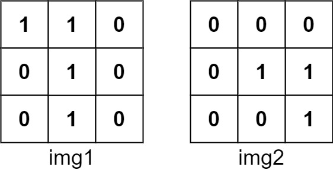
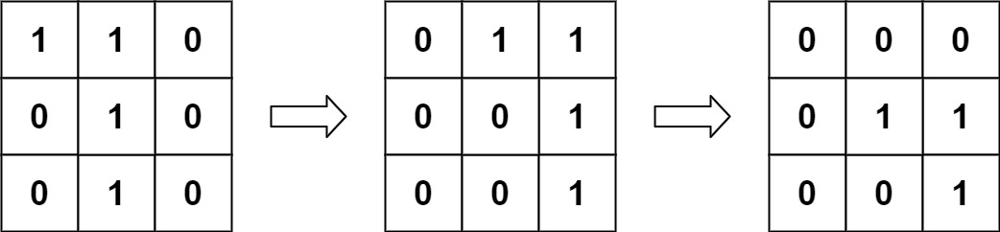
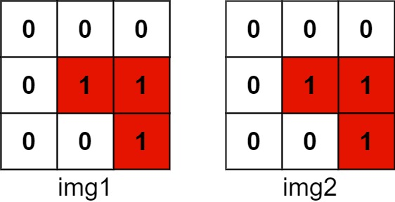

835. 图像重叠
枚举 img1 的每个平移量 (dx, dy)，数重叠加大的那个；每行压成 long，位移+按位与一次算一行。
思路
- 平移把 1 移出边界就丢弃，所以平移量只需取
−(n−1) … n−1，共(2n−1)²种。 dx ≥ 0左移<< dx、dx < 0右移，把 img1 的第R−dy行对齐到 img2 的第R行，bitCount(与)就是该行重叠数。- 行区间
[max(dy,0), min(n+dy,n))天然跳过出界行，不用单独清零。
图解
最优解
1class Solution {2 public int largestOverlap(int[][] img1, int[][] img2) {3 int n = img1.length;4 // 每行压成一个 long：第 j 位就是第 j 列，位移 + 按位与一次算一整行5 long[] a = new long[n], b = new long[n];6 for (int i = 0; i < n; i++)7 for (int j = 0; j < n; j++) {8 if (img1[i][j] == 1) a[i] |= 1L << j;9 if (img2[i][j] == 1) b[i] |= 1L << j;10 }11 int ans = 0;12 // 枚举 img1 的平移量 (dx, dy)：dx 向右为正，dy 向下为正13 for (int dy = 1 - n; dy < n; dy++)14 for (int dx = 1 - n; dx < n; dx++) {15 int cnt = 0;16 // img1 的第 R−dy 行压上 img2 的第 R 行，出界的行自动跳过17 for (int R = Math.max(dy, 0); R < Math.min(n + dy, n); R++) {18 long ra = dx >= 0 ? a[R - dy] << dx : a[R - dy] >> -dx;19 cnt += Long.bitCount(ra & b[R]);20 }21 ans = Math.max(ans, cnt);22 }23 return ans;24 }25}题目
给你两个图像 img1 和 img2 ，两个图像的大小都是 n x n ，用大小相同的二进制正方形矩阵表示。二进制矩阵仅由若干 0 和若干 1 组成。
转换 其中一个图像，将所有的 1 向左，右，上，或下滑动任何数量的单位；然后把它放在另一个图像的上面。该转换的 重叠 是指两个图像 都 具有 1 的位置的数目。
请注意，转换 不包括 向任何方向旋转。越过矩阵边界的 1 都将被清除。
最大可能的重叠数量是多少？
示例 1：

输入：img1 = [[1,1,0],[0,1,0],[0,1,0]], img2 = [[0,0,0],[0,1,1],[0,0,1]] 输出：3 解释：将 img1 向右移动 1 个单位，再向下移动 1 个单位。
两个图像都具有1的位置的数目是 3（用红色标识）。
示例 2：
输入：img1 = [[1]], img2 = [[1]] 输出：1
示例 3：
输入：img1 = [[0]], img2 = [[0]] 输出：0
提示：
n == img1.length == img1[i].lengthn == img2.length == img2[i].length1 <= n <= 30img1[i][j]为0或1img2[i][j]为0或1
题面取自力扣当前版本。
数据快照 2026-11-04。题面版权归力扣所有，本站点仅供本人学习使用，请勿对外发布。